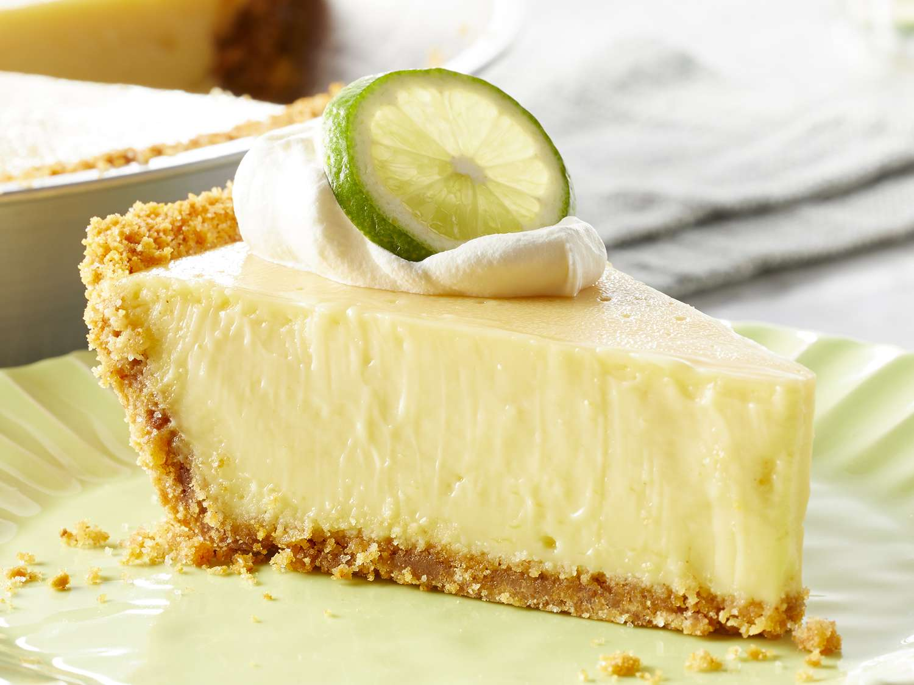

Key Lime Pie

Sunshine in Every Slice!
Transport your taste buds to a tropical paradise with this classic key lime pie! With its tangy, creamy filling and crisp, buttery graham cracker crust, this pie is a zesty delight that’s perfect for any occasion. Every bite offers a refreshing burst of citrus, bringing a little sunshine to your dessert table. Garnish with a dollop of whipped cream and a slice of lime for the perfect finishing touch! 🍋🌴🥧
Ingredients:
- 5 egg yolks, beaten
- 1 (14 ounce) can sweetened condensed milk
- ½ cup key lime juice
- 1 (9 inch) prepared graham cracker crust
Steps:
- Gather all ingredients.
- Preheat the oven to 375 degrees F (190 degrees C).
- Combine sweetened condensed milk, key lime juice, and egg yolks in a large bowl; mix well.
- Pour mixture into unbaked graham cracker crust.
- Bake in the preheated oven until filling is set, about 15 minutes.
- Allow to cool completely before slicing.
Check out these other tasty recipes!